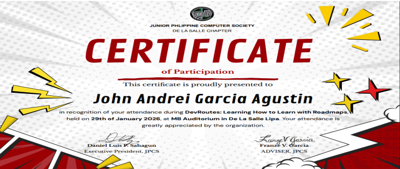
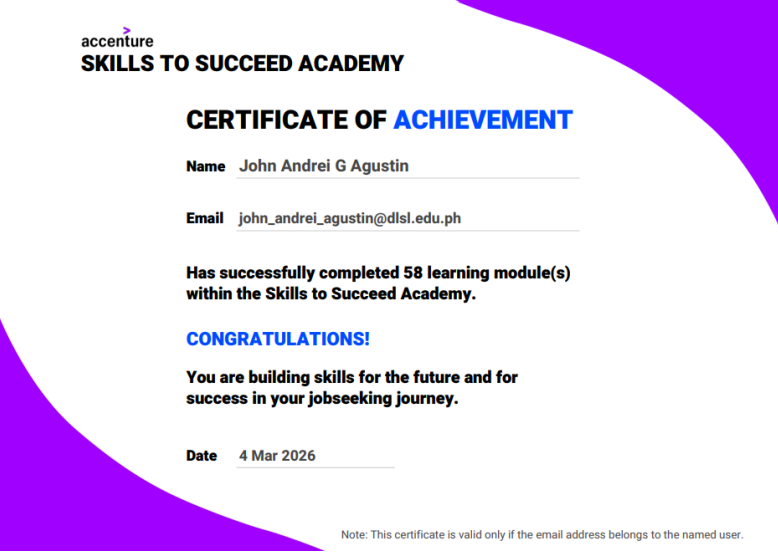
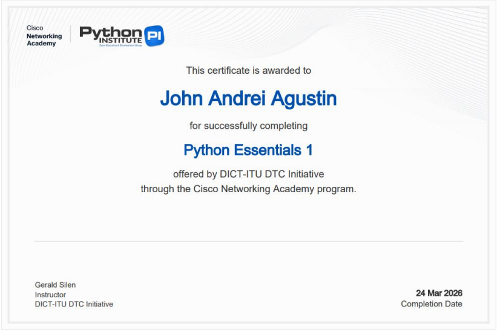
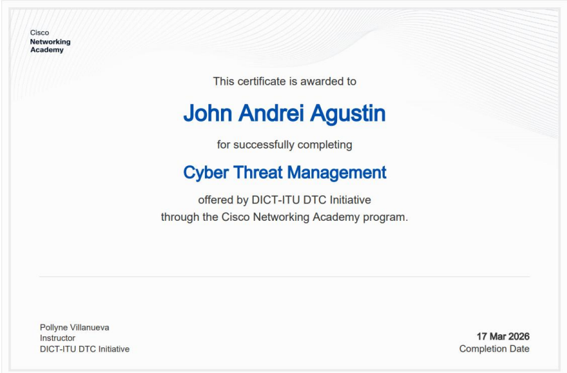
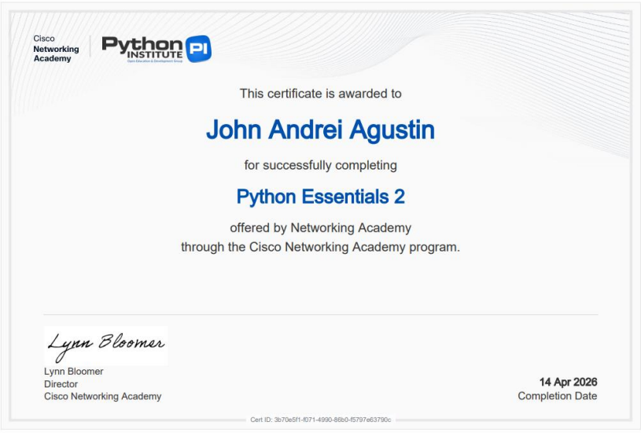

Kumusta! I am
Quality Assurance & Software Testing Advocate
Graduating BSIT student specializing in Systems Development with a developer's perspective and a QA's curiosity. Having built web and mobile applications during college, I understand how software is assembled from the inside out—and where defects hide. I specialize in manual test case design, exploratory bug hunting, and defect documentation, while actively learning test automation with Playwright and Postman.
Real-world applications built during college and verified through manual and functional testing.
A web-based POS prototype designed to modernize small restaurant paper-based operations. Automates order entry, calculates itemized totals & discounts, generates receipts, and reduces order turnaround errors.
A cross-platform mobile application modernizing incident reporting in Lipa City. Features GPS geo-tagging, interactive map dashboards, and Role-Based Access Control (RBAC) to support local authorities in data-driven safety management.
Structured directly from my official CV — combining dedicated Quality Assurance methodologies with practical system development stacks.
Core testing competencies for defect isolation, test documentation, and validation across SDLC and STLC phases.
Essential developer tools and platforms used for inspecting payloads, diagnosing errors, and managing code repositories.
Database environments and backend services verified for transactional integrity and secure schema constraints.
Frontend and cross-platform UI architectures evaluated for responsive layout rendering and input edge cases.
Academic and industry-certified language foundations in algorithmic logic, data querying, and scripting.
Modern AI tooling used for scenario building, combined with essential teamwork and problem-solving mindset.
Bachelor of Science in Information Technology (BSIT) · Specialization in Systems Development
Specialized in Systems Development with coursework in Software Quality Assurance, Testing Methodologies, Database Management Systems, Web & Mobile Development, and Information Systems Architecture.
Click on any certificate to view high-resolution credential




